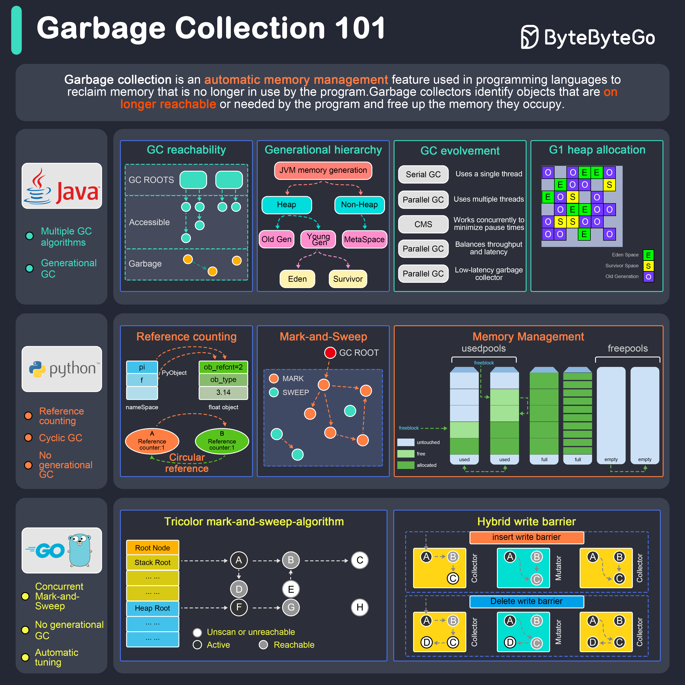

Garbage collection is an automatic memory management feature used in programming languages to reclaim memory no longer used by the program.

Java provides several garbage collectors, each suited for different use cases:
Serial Garbage Collector: Best for single-threaded environments or small applications.
Parallel Garbage Collector: Also known as the “Throughput Collector.”
CMS (Concurrent Mark-Sweep) Garbage Collector: Low-latency collector aiming to minimize pause times.
G1 (Garbage-First) Garbage Collector: Aims to balance throughput and latency.
Z Garbage Collector (ZGC): A low-latency garbage collector designed for applications that require large heap sizes and minimal pause times.
Python’s garbage collection is based on reference counting and a cyclic garbage collector:
Reference Counting: Each object has a reference count; when it reaches zero, the memory is freed.
Cyclic Garbage Collector: Handles circular references that can’t be resolved by reference counting.
Concurrent Mark-and-Sweep Garbage Collector: Go’s garbage collector operates concurrently with the application, minimizing stop-the-world pauses.